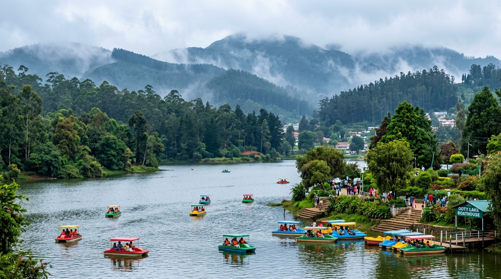
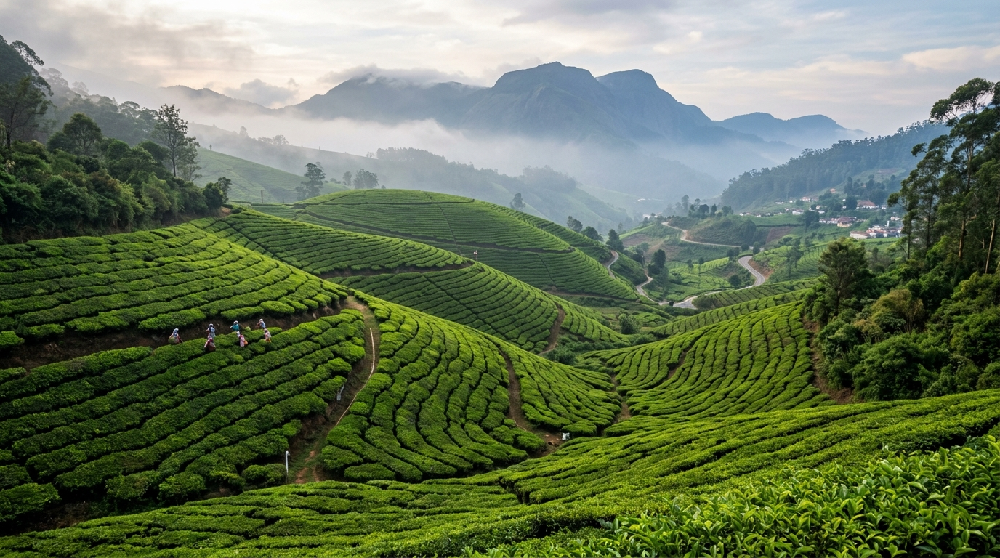
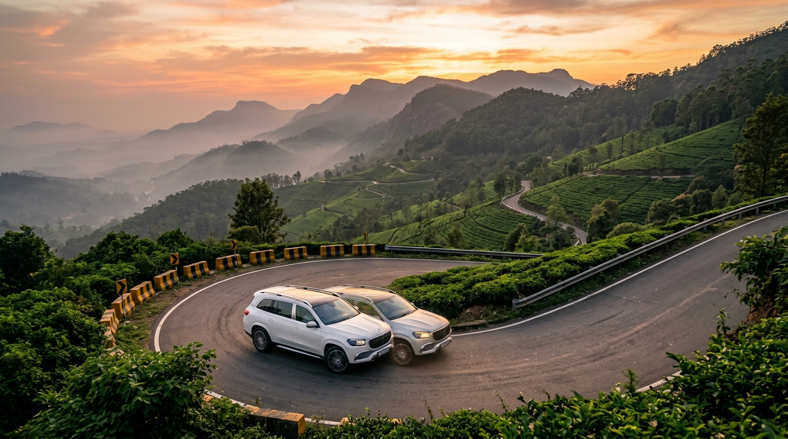
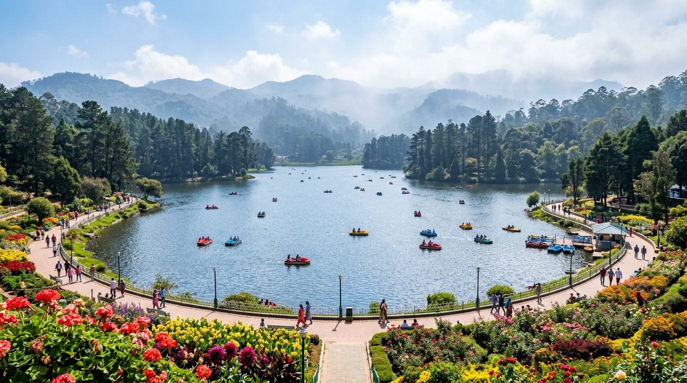
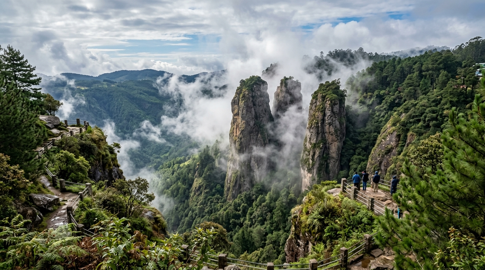
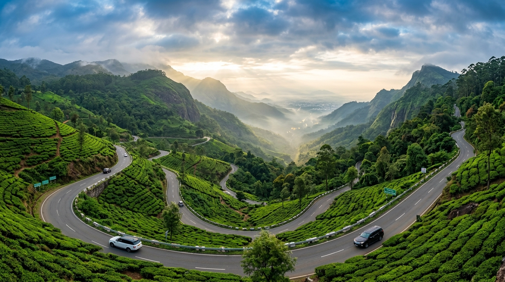
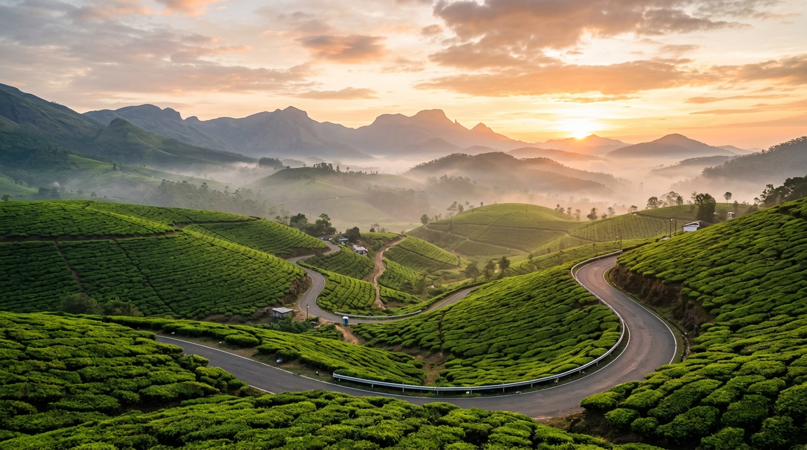
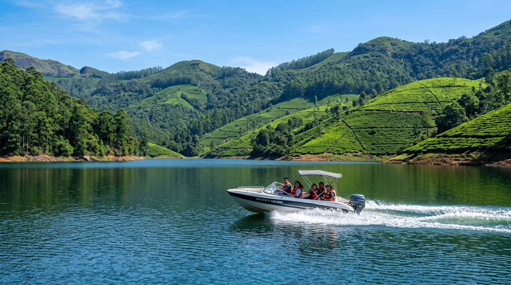

🌿 Yercaud
Lakes & Leisure
🌿 Yercaud
Lakes & Leisure
Yercaud Lake (Emerald Lake)
The centerpiece of Yercaud, featuring scenic pedal and row boating surrounded by lush gardens, tall trees, and misty mountain ridges.
 🌿 Yercaud
Viewpoint
🌿 Yercaud
Viewpoint
Lady's Seat Viewpoint
A dramatic natural rock cliff offering panoramic vistas of the winding 20 hairpin bends, lush valley, and glittering Salem city below.
 🌿 Yercaud
Viewpoint & Heritage
🌿 Yercaud
Viewpoint & Heritage
Pagoda Point (Pyramid Point)
Ancient stone pyramidal structures sitting on eastern hill slopes with refreshing cool breezes and sweeping views of the Kakambadi valley.
 🌿 Yercaud
Scenic Plantation Drive
🌿 Yercaud
Scenic Plantation Drive
32-Km Loop Road
A tranquil driving loop passing through heritage British coffee estates, towering bamboo canopies, cardamom groves, and silver oak trees.
 🌿 Yercaud
Waterfalls
🌿 Yercaud
Waterfalls
Kiliyur Falls
A 300-foot waterfall cascading into the tranquil Servaroyan valley pool, surrounded by dense jungle flora and serene forest trails.
 🌿 Yercaud
Botanical Flora
🌿 Yercaud
Botanical Flora
National Orchidarium & Botanical Garden
Home to over 30 rare and endangered orchid species, the insect-eating pitcher plant, colorful rose beds, and century-old manicured trees.

🌸 Ooty Lakes & BoatingOoty Lake & Boathouse
The crown jewel of the Nilgiris, spread across 65 acres. Enjoy peaceful motor, pedal, and row boating flanked by tall eucalyptus trees and misty hills.

🌸 Ooty Tea EstatesDoddabetta Tea Estates & Factory
Sprawling stepped tea plantations with fresh tea tasting and chocolate factory tours, offering fragrant aromas and breathtaking photography angles.

🌸 Ooty Highest Nilgiri PeakDoddabetta Peak (8,650 ft)
The highest mountain in the Nilgiri ranges. Features an observatory telescope offering 360-degree views of Chamundi Hills, Coimbatore plains, and mist.
🌸 Ooty
Botanical Garden
Government Botanical & Rose Garden
A 55-acre heritage British garden built in 1848, home to thousands of exotic flower species, a 20-million-year-old fossil tree, and India's largest rose display.
Pykara Lake & Waterfalls
Pristine shola forest lake with thrilling speedboating, surrounded by protected pine reserves and majestic stepped waterfalls.
🌸 Coonoor
Viewpoint
Dolphin's Nose & Sim's Park (Coonoor)
A dramatic rock formation resembling a dolphin's snout overlooking Catherine Falls, combined with the tranquil beauty of Sim's Park botanical terraces.

🌲 Kodaikanal Star-Shaped LakeKodaikanal Lake & Promenade
Iconic star-shaped man-made lake located at 6,998 ft, surrounded by pine hills, cycling paths, horse riding trails, and vibrant floral promenades.

🌲 Kodaikanal Cliff ViewpointPillar Rocks (400 ft Boulders)
Three gigantic vertical granite rock pillars standing 400 feet high, emerging like sentinels from deep misty gorges and lush shola forest valleys.

🌲 Kodaikanal Paved Ridge WalkCoaker's Walk & Green Valley View
A 1-kilometer pedestrian walking path carved along mountain edges, offering sweeping cloud views, Dolphin's nose ledge, and the Madurai plains.
Pine Forest & Guna Caves
Tall European pine plantations with surreal tangled root paths and historic deep rock cavern caves, popular in South Indian cinema.
🌲 Kodaikanal
Waterfalls
Silver Cascade Falls
A dazzling 180-foot natural waterfall located right on the Ghat road entrance to Kodaikanal, formed from the overflow of Kodai Lake.
Bryant Park & Glasshouse
A curated botanical garden adjacent to the lake, boasting 700+ varieties of roses, ornamental hybrids, and an annual horticultural flower show.

🍃 Munnar Tea ValleysMunnar Rolling Tea Carpets
Endless emerald-green velvet tea plantations rolling across Western Ghat hills under morning mists, making Munnar South India's tea capital.

🍃 Munnar Dam & SpeedboatingMattupetty Dam & Lake
A massive concrete gravity dam nestled in tea-covered hills. Enjoy exciting speedboat rides and catch glimpses of wild elephants drinking by the shore.
Eravikulam National Park (Anamudi)
Sanctuary of the endangered Nilgiri Tahr mountain goats, surrounding South India's highest peak Anamudi (8,842 ft) and Neelakurinji bloom slopes.
Kundala Arch Dam & Echo Point
Asia's first arch dam with traditional Kashmiri Shikara boat rides, alongside the famous natural Echo Point nestled in mountain valleys.
Top Station & Cloud Ridge
Located at 6,170 ft on the Kerala-Tamil Nadu border, Top Station offers breathtaking bird's-eye panoramas of the Western Ghats and cloud sea.
KDHP Tea Museum & Factory
Discover the century-old history of Munnar's tea plantations with live roller demonstrations, CTC processing, and tea-making workshops.
Custom Multi-Day Hill Station Packages Available
Whether you need a quick 1-day Yercaud getaway or a leisurely 3-day holiday in Ooty, Kodaikanal, or Munnar, senior driver M. Ezhilmathi provides safe ghat driving, punctual pickup, and custom tour itineraries.